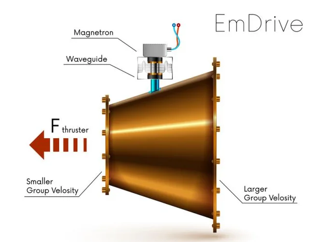

The EmDrive
A radio frequency (RF) resonant cavity thruster is a device that is claimed to be a spacecraft thruster. It is purported to generate thrust by reflecting microwaves internally in the device, in violation of the law of conservation of momentum and other laws of physics. The device is also known as an EmDrive and has been often referred to by the media as the Impossible Drive. It was introduced in 2001 by Roger Shawyer.
There exists no official design for this device, and neither of the people who claim to have invented it have committed to an explanation for how it could operate as a thruster or what elements define it, making it difficult to tell whether a given object is an example of such a device. However, several prototypes based on its public descriptions have been constructed and tested. In 2016, the Advanced Propulsion Physics Laboratory at NASA reported observing a small apparent thrust from one such test, a result not since replicated. No other published experiment has measured apparent thrust greater than the experiment's margin of error.
About This Website
The purpose of this website is to introduce readers to different types of space drive technology that is currently theorized. These theories push the known laws of physics, but they may lead to scientific breakthroughs. Organizations such as
NASA's Eagleworks are testing these and other theories now.